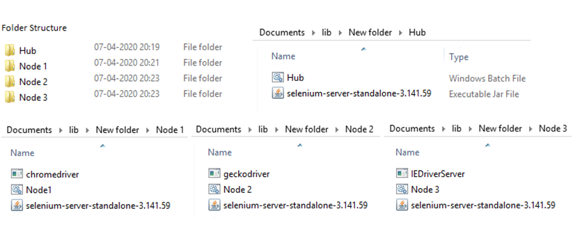
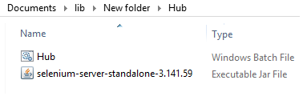

Author Profile
Selenium Grid
Posted on May 1, 2020 at 12:00 PM
What is Selenium Grid?
Selenium Grid is a distributed system which allows us to run the testcases in parallel. I have used the keyword 'distributed' means the server distributes the load among nodes and the nodes execute testcases parallely which saves the execution time significantly.Grid helps in below things
- Distributes tests to several machines (parallel execution)
- Provides multiple test environments like different combinations of OS, Browser, Browser versions etc (cross platform testing)
When to use Selenium Grid
Execution Time Reduction : Let's say we have 1000 testcases to execute in one day. If we go for sequential execution then you can imagine how much time it's going to take. Even if we run them parallel in one system we can't run too many browser instances. This problem can be solved through Selenium Grid. If we configure 10 nodes then the execution can be done 10x faster by executing testcases parallely.
Cross Platform Testing :If we have to test our testcase in Windows, Mac & Chrome Browser version 71, 72 etc. Now let's think, can we have two platforms in a single system? can we have two browser versions in one system? the answer is no. We can solve this problem using Grid. In the Grid system, the nodes can have multiple platforms, different browser versions.
Selenium Grid Architecture
Selenium Grid has a Hub and Node Architecture.The Hub
- The hub is the central point that receives request to run tests.
- There should be one hub in grid architecture.
- The hub can be physical (desktop/laptop machine) or virtual (VMware machine) anything that has operating system, browsers, ip address.
- Hub takes instructions from client and executes them remotely on the nodes.
- Hub receives the requests then it distributes the requests among nodes, the test execution happens in nodes.
The Node
- Node is where the test case gets executed.
- Node has the platform, the browser you are requesting through the test case.
- There can be one or more nodes in selenium grid.
- The node can be physical (desktop/laptop machine) or virtual (VMware machine) anything that has operating system, browsers, ip address.
- Machines running as nodes need not to be on the same platform as hub.
- Node machine registers to Hub and then receives request from the hub to execute test.
Remote WebDriver
We know that to instantiate a browser, we need to work with selenium WebDriver however when it comes to execution through Selenium Grid, we need to use RemoteWebDriver. A quick question here, why do we need Remote WebDriver, why can't we use the selenium WebDriver. If we use web driver then selenium will communicate to the browser that is local.WebDriver driver = new ChromeDriver();
Now if we use RemoteWebDriver, it asks us to specify where the Selenium Server is located and on which web browser we want to execute our tests.
driver = new RemoteWebDriver(new URL("http://localhost:4444/wd/hub") , DesiredCapabilities.chrome());Here we have specified that selenium server is running on localhost with the default port 4444 and execute on chrome browser. In real time the hub url can have the ip address of the hub machine so when we will run the script, it will connect to the hub.
Desired Capabilities
Capabilities is the core part of the selenium grid architecture.- When a node registers at the hub, it registers all it's capabilities like the OS, browser names, browser versions etc. This is called actual capabilities.
- Then when we create the remote web driver object in the selenium script, we pass the capabilities that the script is looking for. This is called Desired Capability.
- The Hub tries to map the desired capability with actual capability. If there's a match then it routes the test to that node machine.
DesiredCapabilities dc = new DesiredCapabilities();
dc.setBrowserName("chrome");
dc.setPlatform(Platform.WINDOWS);
Capability Parameters
Selenium supports 3 capability parameters| Key | Type | Description |
|---|---|---|
| browserName | string | The name of the browser being used; should be one of {android, chrome, firefox, htmlunit, internet explorer, iPhone, iPad, opera, safari}. |
| version | string | The browser version, or the empty string if unknown. |
| platform | string | A key specifying which platform the browser should be running on. This value should be one of {WINDOWS, XP, VISTA, MAC, LINUX, UNIX, ANDROID}. When requesting a new session, the client may specify ANY to indicate any available platform may be used. |
Demo Script
We can simply run the below script to check the grid is working or not. Here I have used the Grid URL as "http://localhost:4444/wd/hub" and in real time instead of localhost, we need to specify the actual ip addrees of the hub machine.public class FirstTestCase { private static WebDriver driver; @BeforeClass public void setup() throws MalformedURLException { driver = new RemoteWebDriver(new URL("http://localhost:4444/wd/hub") , DesiredCapabilities.chrome()); driver.manage().window().maximize(); } @Test public void TC001_automationscript() { driver.get("http://automationpractice.com"); driver.findElement(By.name("email")).sendKeys("abcd@gmail.com"); driver.findElement(By.name("passwd")).sendKeys("automation"); driver.findElement(By.name("SubmitLogin")).click(); } @AfterClass public void tearDown() { driver.quit(); } }
Browser Options
Desired capability feature is old. Browser option is the new way of setting the desired capabilities.- So first we need to create the Desired Capabilities object, set the basic capabilties.
- Then create the browser option object, set the browser options
- Then merge the browser option object with the desired capability object.
- In Remote WebDriver pass on the desired capability object.
- Desired capability is like <key> <value> pair.
@BeforeClass public void setup() throws MalformedURLException { DesiredCapabilities caps = new DesiredCapabilities(); caps.setCapability(CapabilityType.ACCEPT_SSL_CERTS, true); ChromeOptions op = new ChromeOptions(); op.addArguments("--incognito"); caps.merge(op); caps.setPlatform(Platform.WINDOWS); driver = new RemoteWebDriver(new URL("http://localhost:4444/wd/hub"), caps); driver.manage().window().maximize(); }
For the grid execution, we need to design testcases also. For demo purpose we are going to have 3 scripts to run on different browsers.
like chrome, firefox, internet explorer respectively.
Test Script1
Let's build a script to run on chrome browser.public class FirstTestCase { private static WebDriver driver; @BeforeClass public void setup() throws MalformedURLException { DesiredCapabilities caps = new DesiredCapabilities(); caps.setCapability(CapabilityType.ACCEPT_SSL_CERTS, true); ChromeOptions op = new ChromeOptions(); op.addArguments("--incognito"); caps.merge(op); caps.setPlatform(Platform.WINDOWS); driver = new RemoteWebDriver(new URL("http://localhost:4444/wd/hub"), caps); driver.manage().window().maximize(); } @Test public void TC001_automationscript() { driver.get("http://automationpractice.com/index.php?"); driver.findElement(By.name("email")).sendKeys("abc@gmail.com"); driver.findElement(By.name("passwd")).sendKeys("automation"); driver.findElement(By.name("SubmitLogin")).click(); } @AfterClass public void tearDown() { driver.quit(); } }
Test Script2
The below script to run on firefox browser.public class SecondTestCase { private static WebDriver driver; @BeforeClass public void setup() throws MalformedURLException { DesiredCapabilities caps = new DesiredCapabilities(); caps.setPlatform(Platform.WINDOWS); driver = new RemoteWebDriver(new URL("http://localhost:4444/wd/hub"), caps.firefox()); driver.manage().window().maximize(); } @Test public void TC002_automationscript() { driver.get("http://automationpractice.com/index.php?"); driver.findElement(By.name("email")).sendKeys("abc@gmail.com"); driver.findElement(By.name("passwd")).sendKeys("automation"); driver.findElement(By.name("SubmitLogin")).click(); } @AfterClass public void tearDown() { driver.quit(); } }
Test Script3
The below script to run on internet explorer browser.public class ThirdTestCase { private static WebDriver driver; @BeforeClass public void setup() throws MalformedURLException { DesiredCapabilities caps = new DesiredCapabilities(); caps.setCapability(CapabilityType.ACCEPT_SSL_CERTS, true); InternetExplorerOptions op = new InternetExplorerOptions(); op.ignoreZoomSettings(); caps.merge(op); caps.setPlatform(Platform.WINDOWS); driver = new RemoteWebDriver(new URL("http://localhost:4444/wd/hub"), caps); driver.manage().window().maximize(); } @Test public void TC003_automationscript() { driver.get("http://automationpractice.com/index.php?"); driver.findElement(By.name("email")).sendKeys("abc@gmail.com"); driver.findElement(By.name("passwd")).sendKeys("automation"); driver.findElement(By.name("SubmitLogin")).click(); } @AfterClass public void tearDown() { driver.quit(); } }
testng.xml
<?xml version="1.0" encoding="UTF-8"?>
<!DOCTYPE suite SYSTEM "https://testng.org/testng-1.0.dtd">
<suite name="Suite" parallel="methods">
<test thread-count="5" name="Test">
<classes>
<class name="testscripts.FirstTestCase"/>
<class name="testscripts.ThirdTestCase"/>
<class name="testscripts.SecondTestCase"/>
</classes>
</test> <!-- Test -->
</suite> <!-- Suite -->
Hub Configuration
- Identify any physical/virtual machine to configure as hub.
- Download the selenium server jar file from - https://www.selenium.dev/downloads/
- Create a batch file and give the name as HUB.bat (type the command in note pad and save with .bat extension)
- In the HUB.bat file put the below code
java -jar selenium-server-standalone-3.12.0.jar -port 4444 -role hub
- The selenium server jar file name may change based on which version you download.
- Keep both the jar file & the bat file in the same folder.
- Double click on the HUB.bat file.
Indicates the HUB is now started.
INFO [Hub.start] - Selenium Grid hub is up and runningIndicates that now nodes can register to the HUB using the mentioned IP address/HUB url
INFO [Hub.start] - Nodes should register to http://1xx.1xx.1.xx:4444/grid/register/Indicates that the clients, means the automation script can send request to the HUB using the mentioned IP address/HUB url
INFO [Hub.start] - Clients should connect to http://1xx.1xx.1.xx:4444/wd/hub
Node 1 Configuration
- Identify any physical/virtual machine to configure as Node.
- Download the selenium server jar file from - https://www.selenium.dev/downloads/
- Create a batch file and give the name as node1.bat (type the command in note pad and save with .bat extension)
- In the Node1.bat file put the below code
java -Dwebdriver.chrome.driver="chromedriver.exe"
-jar selenium-server-standalone-3.141.59.jar -role node
-hub http://10.0.0.0:4444/grid/register -port 5555
-browser browserName=chrome,maxInstances=5,platform=WINDOWS -maxSession 5
INFO [SelfRegisteringRemote.registerToHub]
- The node is registered to the hub and ready to use
Node 2 Configuration
- We need to have multiple nodes to take the full advantage of the grid system.
- Follow the same steps mentioned above for configuring the nodes in other machines.
- For the demo purpose we have created the above node for chrome browser.
- Similarly create a node for firefox in another machine using the below command. Save the command in file Node2.bat
java -Dwebdriver.gecko.driver="geckodriver.exe"
-jar selenium-server-standalone-3.141.59.jar -role node
-hub http://10.0.0.0:4444/grid/register -port 5557
-browser "browserName=firefox, maxInstances=5, platform=ANY,
seleniumProtocol=WebDriver"
Node 3 Configuration
- We need to have multiple nodes to take the full advantage of the grid system.
- Follow the same steps mentioned above for configuring the nodes in other machines.
- For the demo purpose we have created the above nodes for chrome browser, firefox browser.
- Similarly create a node for microsoft edge in another machine using the below command.
- Save the command in file Node3.bat
java -Dwebdriver.ie.driver="IEDriverServer.exe"
-jar selenium-server-standalone-3.141.59.jar -role node
-hub http://10.0.0.0:4444/grid/register -port 5558
-browser "browserName=internet explorer,version=10,platform=WINDOWS,maxInstances=5"
Folder Structure
HUB folder : Move this folder to the HUB machine

Node 1 folder : Move this folder to a node machine.

Node 2 folder : Move this folder to a node machine.

Node 3 folder : Move this folder to a node machine.

Now the configuration is complete. Then we will go for parallel test execution through selenium grid.
Pre Requisites
- In the design section, we have 3 scripts for each browser. The HUB folder is in the hub machine, The Node 1,2,3 folders are moved to the node machines.
- The HUB, Nodes should be in the same network (for testing we can have all three persons connected to same wifi)
- Windows firewall should be turned off. Window+R -> Control panel -> Windows and security -> Switch off firewall.
Start Hub
- Go to the Hub folder and run 'Hub.bat'
- In the command prompt, it will say the the server is started.
- Note down the ip address of the hub system
- Open the grid console using the ip address, replace the 10.10..with the ip address of the hub machine.
http://10.10.10.49:4444/grid/console
http://localhost:4444/grid/console - In the grid console you will not see anything
Start Node 1
- Go to the first machine and open Node 1 folder
- Open the Node 1.bat file in edit mode
- Change the ip address received from the server
- Save the bat file and double click.
- In the command prompt it will display the node is registered and ready to use.
- At the HUB also in the command prompt it will display that a node is registered.
- Now check the grid console, it will display this node machine's address. http://10.10.10.49:4444/grid/console
Start Node 2
- Go to the second machine and open Node 2 folder
- Open the Node 2.bat file in edit mode
- Change the ip address received from the server
- Save the bat file and double click.
- In the command prompt it will display the node is registered and ready to use.
- At the HUB also in the command prompt it will display that a node is registered.
- Now check the grid console, it will display this node machine's address. http://10.10.10.49:4444/grid/console
Start Node 3
- Go to the third machine and open Node 3 folder
- Open the Node 3.bat file in edit mode
- Change the ip address received from the server
- Save the bat file and double click.
- In the command prompt it will display the node is registered and ready to use.
- At the HUB also in the command prompt it will display that a node is registered.
- Now check the grid console, it will display this node machine's address. http://10.10.10.49:4444/grid/console
The client(My machine)
- Import the three scripts we have designed
- Change the IP address of the HUB machine in all three scripts
- Run the testng.xml file.
- It will start running the scripts in the node machines - Node 1, Node 2, Node 3
- If we check the grid console, it will show the few browser icons disabled, that indicates the browser instance is running.
- The results will be stored in the client machine, from where the scripts are getting executed.
The Grid Console
The Grid console is a url http://10.10.10.49:4444/grid/console that helps in monitoring the grid execution. The console shows- The connected machine's IP address
- Browser and its maximum instances
- Execution status
When do we need Parallel Execution?
- To test in multiple browser versions
- Need to execute huge number of test cases
- Need to test in multiple OS platforms
How to do Parallel Execution?
- Using Selenium Grid
- Or using Cloud Based apps (Sauce labs, BrowserStack,KeyNote)
Sauce labs, BrowserStack?
Key Notes
- By default the grid will run on port 4444
- Selenium Grid consists of Hub & Node. Many people think that the selenium scripts are executed on node. That's wrong. The scripts are executed on client machines -> It goes to Hub -> Then the automated browser runs on node and sends back results.
- The selenium script has desired capabilities & the node has actual capabilities.
- When selenium HUB finds a match between the desired capability & actual capability, it sends the request to the node. If it doesn't find a match then it waits until the request time out is met.